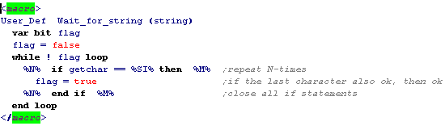

Nesting of user definied macros is not allowed
Static strings
If strings are limited to static objects (constants), the problem of dynamic storage is bypassed.
The typical constructions needed are:
Example: Display_String_at_Pos
Supposing you've a procedure, in this case even definied as a pseudo-var,
called LCD_char, that writes a character to the display at the current cursor position,
and increments the cursor afterwards.
LCD_set_cursor is a normal JAL-procedure, that sets the cursor at the specified position.
Then the macro to display at some position of the display could look like this:
Example: Wait_for_String
In this example we want to wait for a specific string from some kind of terminal.

It's possible to make it even more universal,
by passing the getchar function as a parameter.
To make it even more universal, we define a "global-compiler-constant"
%A% = getchar
..> picture here